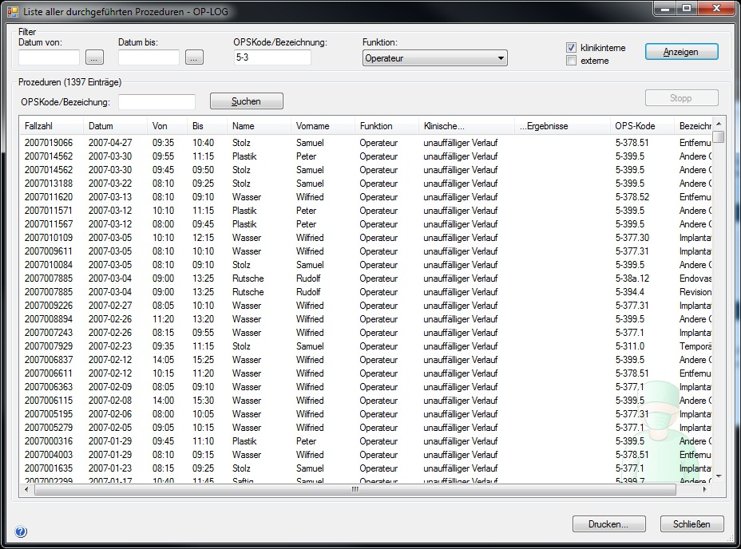

In diesem Fenster erhalten Sie eine direkte Sicht auf die Operationsdaten. Sie können die Liste durch Angabe eines Zeitraumes eingrenzen.
Dieses Fenster ist nützlich, um den Datenimport zu überprüfen, da alle Prozeduren ungefiltert nach Datum absteigend sortiert (neuestes Datum zuerst) angezeigt werden.